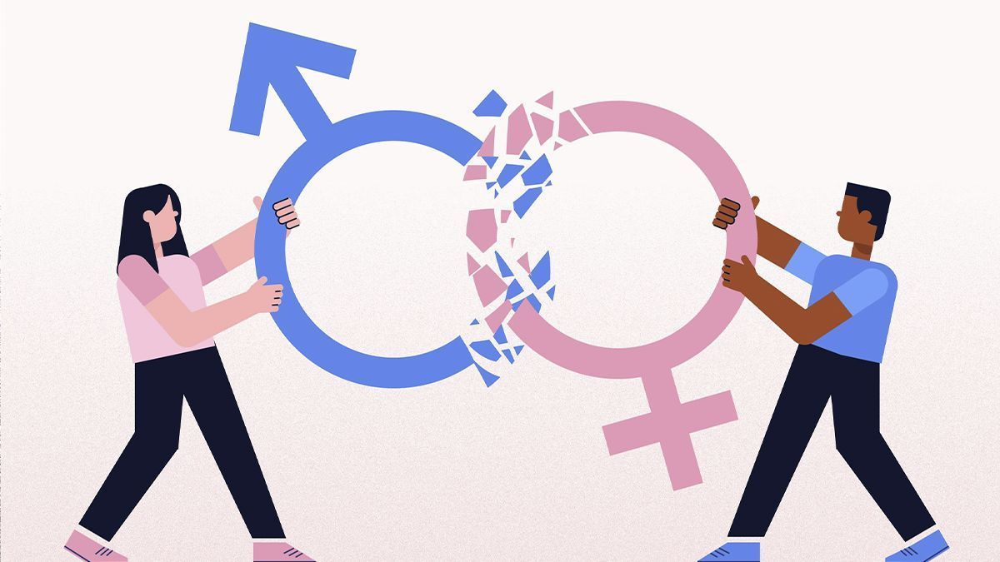

Género

El Género se refiere a los atributos sociales y las oportunidades asociadas a ser hombre o mujer, y las relaciones entre mujeres y hombres, niñas y niños. Estos atributos, oportunidades y relaciones se establecen y se aprenden en la sociedad, son específicos al contexto o tiempo, y pueden cambiar, por ejemplo: el hecho de que las mujeres hagan más tareas del hogar que los hombres.
El género determina lo que se espera, se permite y se valora en una mujer o un hombre en un contexto determinado. El “hombre” y la “mujer” son categorías sexuales, mientras que lo “masculino” y lo “femenino” son categorías de género.